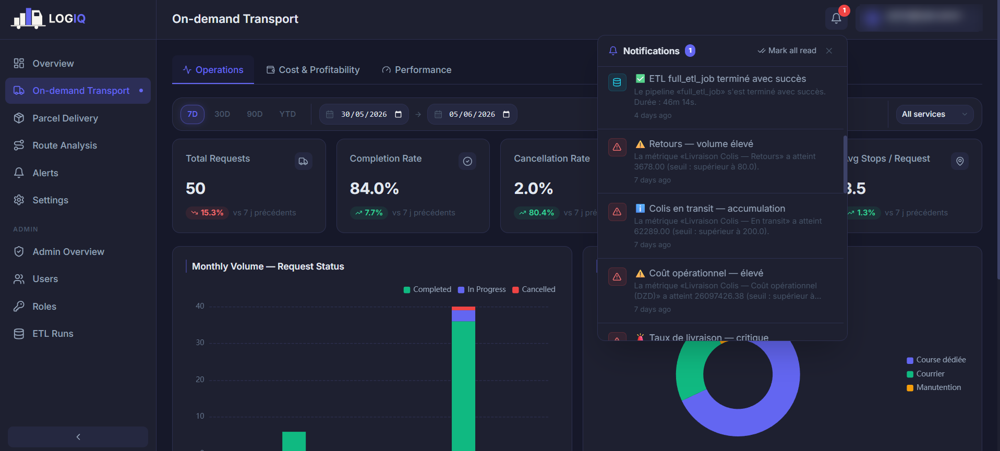
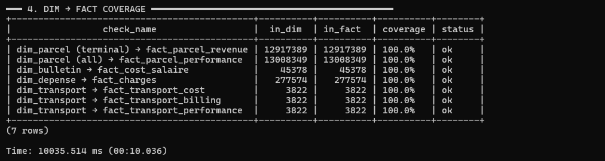
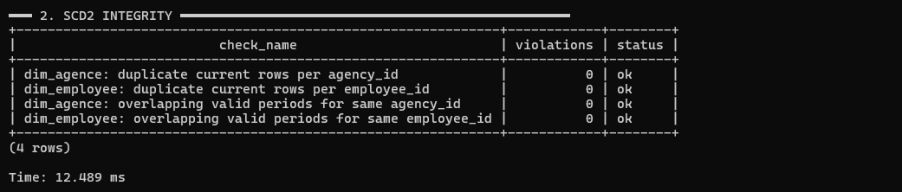

Testing & results¶
A decision-support system is only as valuable as the confidence its users place in it. The production source systems could not be connected during development, so LOGIQ was validated end to end against a faithful test environment. The key property of that environment: the pipeline connects to it exactly as it would to the real systems.
Simulated source systems¶
A dedicated service, built with FastAPI over PostgreSQL, simulates the five source systems behind REST APIs.
| Simulated system | Domain it provides |
|---|---|
| Core logistics application | Geography, delivery centres, pricing grid, full parcel-event history |
| HR system | Companies, agencies, employees, organisational hierarchy |
| Expense management system | Operating expenses, driver payments, reimbursements, internal transfers |
| Payroll system | Monthly payslips |
| Dedicated transport module | B2B transport requests and their stops |
Why a simulation is enough
Each mock API reproduces the same endpoints, response shapes, authentication, pagination and quirks as its real counterpart. The ETL depends only on that contract, never on a system's internal database. It therefore runs against the simulation without a single change to its extraction code, and the same pipeline would run unaltered against the live systems.
Realistic data generation¶
The data is synthetic but business-realistic, and generated in two tiers:
- Real reference data seeds the dimensions: the Algerian administrative geography (wilayas and communes), the network of agencies and delivery centres, the company structure and the pricing grid.
- Synthetic transactional data is generated on top: parcels and their lifecycles, payroll, expenses and transport requests.
The synthetic data follows domain rules:
| Rule | What it reproduces |
|---|---|
| Working calendar | The Algerian week — Friday is the only day off; reduced weekend activity |
| Seasonality | Ramadan slowdown then pre-Eid peak, Black Friday surge, end-of-year peak |
| Geographic realism | Parcel volume spread across wilayas in realistic proportions |
| Labour-law payroll | Salaries computed with Algerian labour-law rates |
| Full parcel lifecycle | Every parcel goes through its complete multi-status lifecycle |
| Internal consistency | Costs, billing and operations reconcile with each other |
Scale of the test dataset¶
The dataset is generated at production scale, so performance and correctness are tested under real load. These volumes were read from the warehouse after a full run.
| Data domain | Volume generated |
|---|---|
| Parcels | 13,008,349 parcels (≈ 13 million) |
| Parcel-status events | 30,527,458 events (≈ 30.5 million) — the largest feed |
| Payroll | 45,378 monthly payslips, for a workforce growing to about 3,000 employees |
| Operating expenses | 277,574 expense records, plus 43,668 driver payments and 15,949 reimbursements |
| Dedicated transport | 3,822 B2B requests, with 13,414 stops |
| Reference dimensions | 58 wilayas, 1,541 communes, 331 agencies, 252 delivery centres |
At this scale, the aggregate layer and the incremental load are genuinely put under pressure. On a toy dataset, neither could be meaningfully exercised.
Data-quality gate¶
An automated validation suite runs after every generation. The dataset is admitted to the ETL only when every critical check passes, so any anomaly seen downstream can be blamed on the platform, not on its input.
| Check category | What it verifies |
|---|---|
| Referential integrity | Every cross-system reference points to an entity that exists |
| Financial identities | Costs, billing and reimbursements reconcile |
| Distance identities | Transport distances are coherent (leg distances sum to the total) |
| Working calendar | No operational event falls on a Friday |
| Identifier formats | Identifiers follow their expected conventions |
| Test-entity isolation | Excluded test entities never leak into the data |
The suite has two tiers. Critical checks block the dataset outright. Statistical checks confirm that distributions are plausible (volumes by wilaya, salary ranges, lifecycle proportions).
End-to-end validation¶
flowchart TB
A["Simulated<br/>sources"] --> B["ETL<br/>pipeline"] --> C["Warehouse"] --> D["Backend<br/>API"] --> E["Dashboards"] --> F["Alerts"]The whole chain was run as one, and each stage's output was checked:
- the ETL extracts from the mock APIs and populates every warehouse layer;
- the aggregate layer feeds the backend's analytics endpoints;
- the dashboards render the resulting KPIs;
- the alerting service raises and delivers notifications when a metric crosses a threshold.
Graceful degradation was verified separately. With the warehouse deliberately made unavailable, the analytics endpoints failed safe and the dashboard fell back to representative figures instead of breaking.

Warehouse integrity audit¶
After every full run, an automated audit checks that the ETL itself preserved the data through every layer.
| Audit dimension | What it verifies | Result |
|---|---|---|
| Layer population | Every staging table and principal dimension and fact holds the expected rows | All populated |
| SCD Type 2 integrity | No duplicate current rows, no overlapping validity windows | 4 checks, 0 violations |
| Staging → dimension coverage | Every source entity reaches its dimension | 8 checks, 100 % |
| Dimension → fact coverage | Every dimension key is exercised by its facts | 7 checks, 100 % |
| Business rules | Financial, format and test-isolation invariants hold after load | 12 checks, 0 violations |
Where a fact holds fewer rows than its dimension, a business rule explains it. Only parcels that reach a billable state produce revenue rows, for example, while every parcel is measured for performance.
| Check (source entity → dimension) | In staging | In dimension | Coverage |
|---|---|---|---|
Parcel status history (trackings) → dim_parcel |
13,008,349 | 13,008,349 | 100 % |
HR agencies (non-test) → dim_agence (current) |
331 | 331 | 100 % |
HR users (non-test) → dim_employee (current) |
3,000 | 3,000 | 100 % |
Payslips (non-test, in range) → dim_bulletin |
45,378 | 45,378 | 100 % |
Expenses → dim_depense |
277,574 | 277,574 | 100 % |
Transport requests → dim_transport |
3,822 | 3,822 | 100 % |
Delivery centres → dim_center |
252 | 252 | 100 % |
Wilayas → dim_wilaya |
58 | 58 | 100 % |


Verdict
The data served by the simulated sources arrives in the warehouse complete (100 % coverage), correct (zero rule violations) and consistently historised (SCD2 intact). Because the pipeline connects to the simulation exactly as it would to production, this is evidence about the production design itself.
Results against the objectives¶
| Objective | Result delivered |
|---|---|
| Consolidate the scattered data | One dimensional base; figures consistent across every view |
| Read each business axis in depth | Both axes navigable through three views, with KPI cards, charts, maps and shared filters |
| Keep the financial perimeters separate | Each axis carries its own cost and revenue perimeter |
| Monitor proactively | Threshold rules evaluated on schedule raise multi-channel alerts |
| Deliver to the right decision-maker | Role-based access gives each manager the right view, plus a consolidated overview |
| Found decisions on reliable data | Automatic, incremental, idempotent and observable refresh |
On performance, the design choices held up under realistic load. Because the analytics endpoints read the pre-computed aggregate layer rather than scanning the fact tables, the dashboards return within seconds even over the production-scale dataset.
Stated limits
Formal benchmark figures (dashboard response times, refresh duration) have not been measured yet, and no live user-acceptance round has taken place. See Future work.